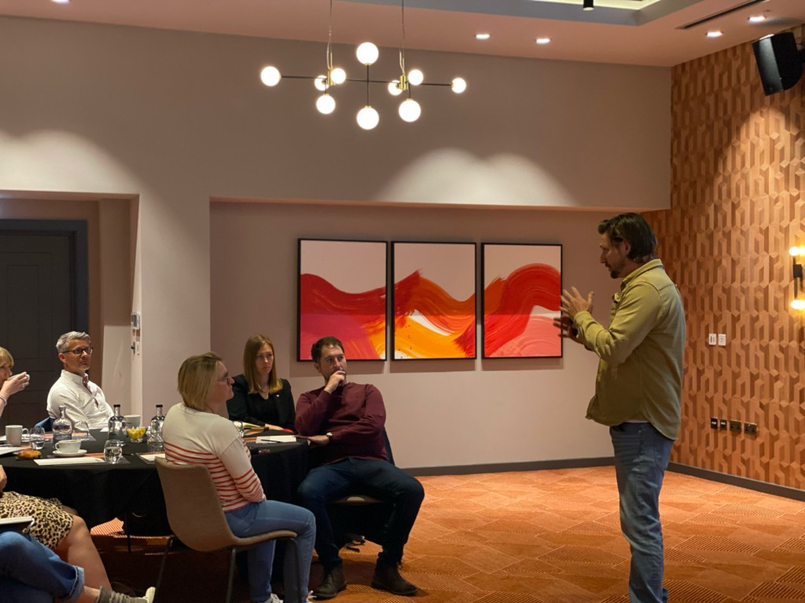
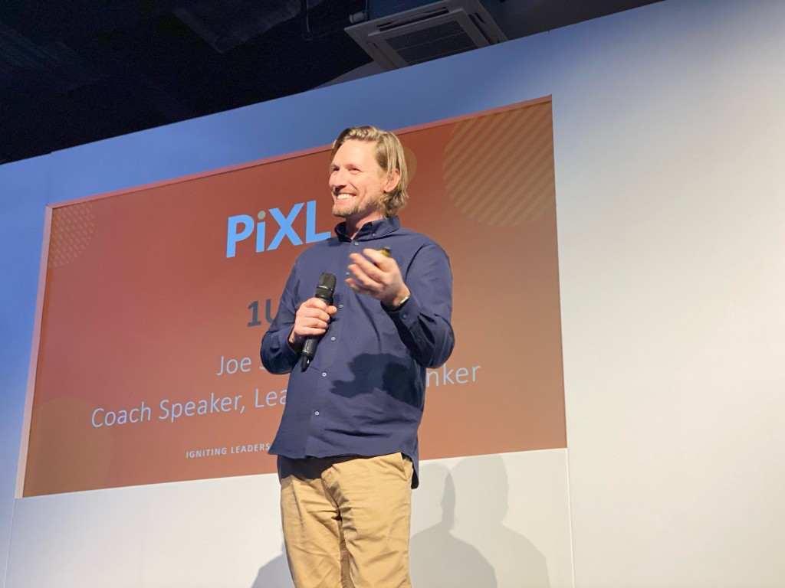
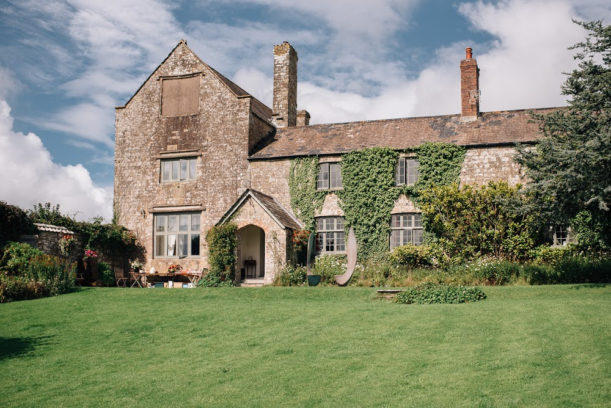
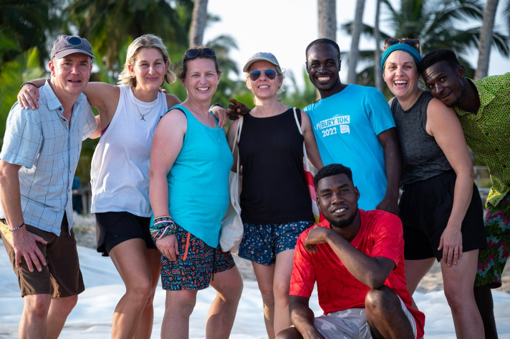

Life, leadership and anything else you want to talk about.
If you're looking for different, find it here.
We do coaching
What this is



Experiences
Ash Barton Estate, North Devon
Turn your phone off and get outside. At the beach, in the woods, by the fire. Tailor made for your team.

Adventures
Ghana, West Africa
Leave the world you know behind and join Outlier on a one-week adventure of a lifetime.
Start where you are
Upcoming adventures
Ghana Coaching Week
What people say
Outlier is different. Good different. Very good different. I’ve worked with a variety of coaches over the years but can honestly say that I have developed the most - both personally and professionally - with Outlier. The approach is unique. I am encouraged to think deeply and do better and be better.
Want a different type of coach? Outlier gets to the core of the issue whilst getting you to reflect, question, laugh, cry (in a good way), and solve the problem. I leave feeling challenged, like I’ve had therapy, leadership development and great fun. Book it - it’s rare to find someone of this quality.
Outlier has been instrumental in transforming the way I think, behave and manage my leadership role. They are so in tune with what you think and feel and can very quickly delve deeper into the why and what but ultimately the how to make things better.
Outlier’s sessions feel more like soul-searching, which feeds into both the logical and emotional brain. Inherently helpful and I am already grateful for Outlier’s sincere interest and commitment to helping me grow as a leader, and a person.

Let’s have a conversation
Connect to a real person. Free and confidential.